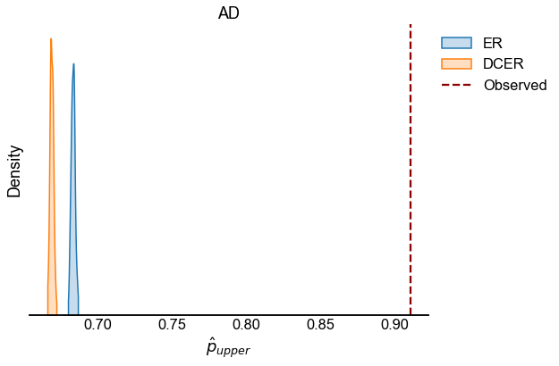
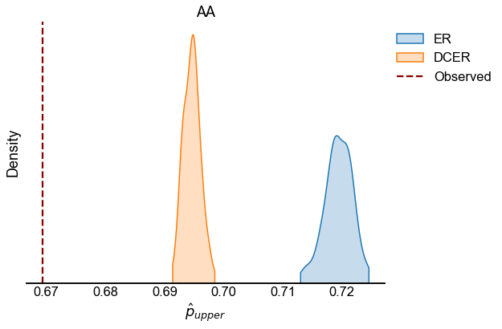
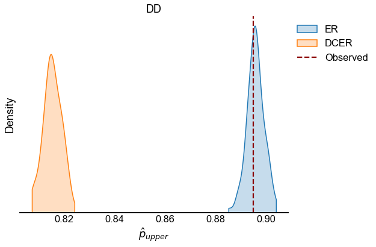
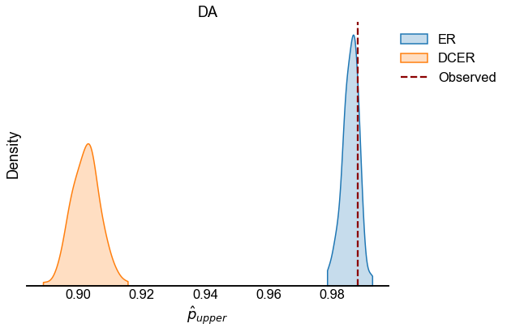

One-sample feedforwardness testing: data¶
Here we apply the test statistic \(p_{upper}\) (see Testing bilateral symmetry) to our four observed networks and compare to randomly sampled networks from null models.
Preliminaries¶
from pkg.utils import set_warnings
import datetime
import time
from pathlib import Path
import os
import matplotlib.pyplot as plt
import numpy as np
import pandas as pd
import seaborn as sns
from joblib import Parallel, delayed
from tqdm import tqdm
from graspologic.models import DCEREstimator, EREstimator
from graspologic.plot import heatmap
from graspologic.simulations import sample_edges, sbm
from graspologic.utils import (
binarize,
is_fully_connected,
largest_connected_component,
remove_loops,
)
from pkg.data import load_maggot_graph
from pkg.flow import calculate_p_upper, rank_graph_match_flow
from pkg.io import savefig
from pkg.plot import set_theme
set_warnings()
np.random.seed(8888)
t0 = time.time()
os.chdir("/Users/bpedigo/JHU_code/maggot")
out_path = Path("maggot_connectome/results/outputs/feedforwardness_data")
def stashfig(name, **kwargs):
foldername = "feedforwardness_data"
savefig(name, foldername=foldername, **kwargs)
colors = sns.color_palette("Set1")
set_theme()
Load the data¶
mg = load_maggot_graph()
mg = mg[mg.nodes["paper_clustered_neurons"]]
Run a one-sample test for feedforwardness on each edge type¶
Here the number of bootstrap samples for the null distributions is 100. We compute the null distribution for both the ER and DCER fits to each observed network.
NB: There was some weirdness where often some of the sampled graphs were disconnected. I think this happened in particular for the DCER graphs.
def p_upper_tstat(A):
perm_inds = rank_graph_match_flow(A, n_init=1, max_iter=20)
p_upper = calculate_p_upper(A[np.ix_(perm_inds, perm_inds)])
return p_upper
def sample_null_distribution(p_mat, tstat_func, n_samples=1000, parallel=True):
if parallel:
def sample_and_tstat(seed=None):
if seed is not None:
np.random.seed(seed)
A = sample_edges(np.array(p_mat), directed=True, loops=False)
if not is_fully_connected(A):
print("Original sample was not fully connected, trying again...")
tries = 0
connected = False
while not connected and tries < 10:
A = sample_edges(np.array(p_mat), directed=True, loops=False)
connected = is_fully_connected(A)
tries += 1
if not connected:
print("Did not sample connected graph after 10 tries.")
tstat = tstat_func(A)
return tstat
seeds = np.random.randint(1e8, size=n_samples)
null = Parallel(n_jobs=-2, verbose=10)(
delayed(sample_and_tstat)(seed) for seed in seeds
)
else:
null = []
for i in tqdm(range(n_samples)):
A = sample_edges(p_mat, directed=True, loops=False)
if not is_fully_connected(A):
print("Original sample was not fully connected, trying again...")
tries = 0
connected = False
while not connected and tries < 10:
A = sample_edges(np.array(p_mat), directed=True, loops=False)
connected = is_fully_connected(A)
tries += 1
if not connected:
print("Did not sample connected graph after 10 tries.")
tstat = tstat_func(A)
null.append(tstat)
null = np.array(null)
null = np.sort(null)
return null
def compute_pvalues(p_upper, null):
row = {}
row["estimated_p_upper"] = p_upper
ind = np.searchsorted(null, p_upper)
row["pvalue"] = 1 - ind / len(
null
) # TODO make more exact but this is roughly right for one sided
return row
edge_types = ["ad", "aa", "dd", "da"]
null_estimators = {
"ER": EREstimator(directed=True, loops=False),
"DCER": DCEREstimator(directed=True, loops=False, degree_directed=False),
}
rerun_test = False
if rerun_test:
currtime = time.time()
n_null_samples = 100
statistics = []
for edge_type in edge_types:
print(f"Edge type = {edge_type}")
edge_type_adj = mg.to_edge_type_graph(edge_type).adj
edge_type_adj = binarize(edge_type_adj)
largest_connected_component(edge_type_adj)
tstat = p_upper_tstat(edge_type_adj)
observed = pd.DataFrame(index=[0])
observed["estimated_p_upper"] = tstat
observed["edge_type"] = edge_type
observed["null_model"] = "Observed"
statistics.append(observed)
# estimate null distribution via bootstrap sampling
for null_name, NullEstimator in null_estimators.items():
ne = NullEstimator.fit(edge_type_adj)
def sampler():
return np.squeeze(ne.sample())
null = sample_null_distribution(
ne.p_mat_, p_upper_tstat, n_samples=n_null_samples
)
null_dist = pd.Series(data=null, name="estimated_p_upper").to_frame()
null_dist["null_model"] = null_name
null_dist["edge_type"] = edge_type
statistics.append(null_dist)
statistics_save = pd.concat(statistics, ignore_index=True)
statistics_save.to_csv(out_path / "statistics.csv")
print("Saved progress to statistics.csv")
print()
print(f"{time.time() - currtime:.3f} seconds elapsed.")
Plot feedforward test statistics¶
We look at the test statistic \(p_{upper}\) (see Testing bilateral symmetry) for the observed data as well as for samples from ER and DCER null models.
statistics = pd.read_csv(out_path / "statistics.csv", index_col=0)
for edge_type in edge_types:
edge_type_stats = statistics[statistics["edge_type"] == edge_type]
fig, ax = plt.subplots(1, 1, figsize=(8, 6))
sns.kdeplot(
data=edge_type_stats[edge_type_stats["null_model"] != "Observed"],
x="estimated_p_upper",
hue="null_model",
ax=ax,
cut=0,
fill=True,
)
observed = edge_type_stats[edge_type_stats["null_model"] == "Observed"]
line = ax.axvline(
observed.iloc[0]["estimated_p_upper"], color="darkred", linestyle="--"
)
legend = ax.get_legend()
handles = legend.legendHandles
handles.append(line)
labels = [t.get_text() for t in legend.texts]
labels.append("Observed")
legend.remove()
ax.legend(handles=handles, labels=labels, bbox_to_anchor=(1, 1), loc="upper left")
ax.set(xlabel=r"$\hat{p}_{upper}$", title=edge_type.upper(), yticklabels=[])
ax.spines["left"].set_visible(False)
stashfig(f"{edge_type}_p_upper_statistic")




End¶
elapsed = time.time() - t0
delta = datetime.timedelta(seconds=elapsed)
print("----")
print(f"Script took {delta}")
print(f"Completed at {datetime.datetime.now()}")
print("----")
----
Script took 0:00:10.031580
Completed at 2021-03-26 16:47:03.143947
----